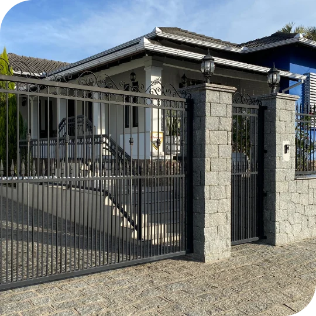
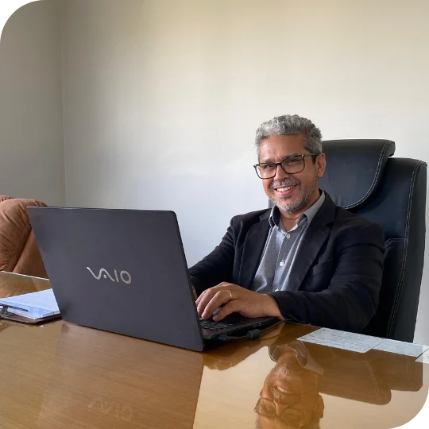
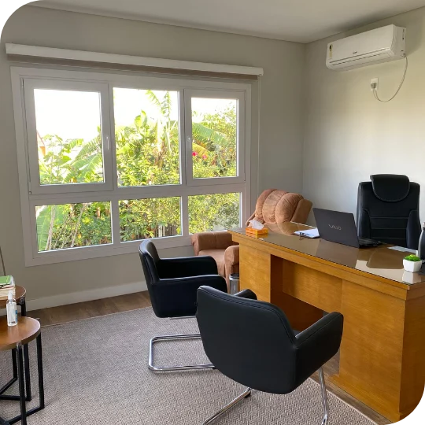
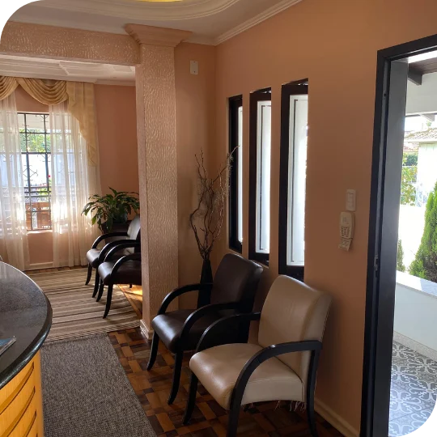
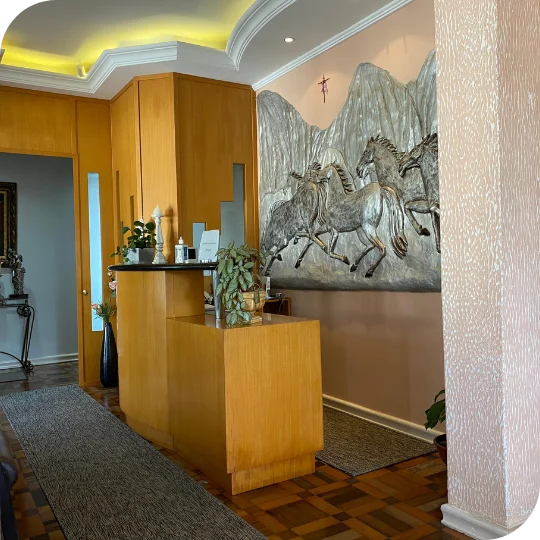
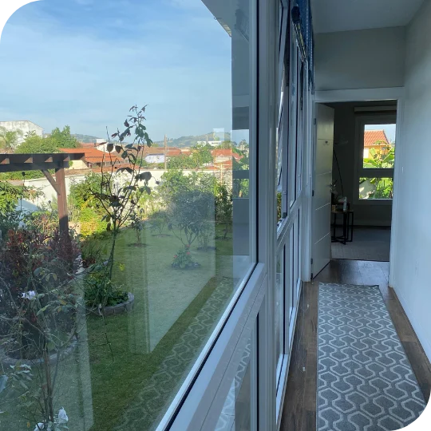
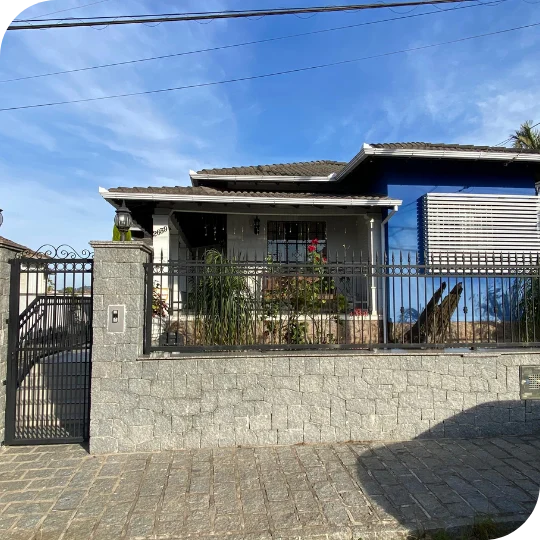

Ansiedade e estresse
Entender o que alimenta a preocupação e a sobrecarga e conversar sobre maneiras de lidar com elas no dia a dia.
Conversar com o GelsonPsicólogo em Tubarão, SC
Um espaço de escuta para entender o que você está vivendo e cuidar da sua saúde emocional.
Gelson SilvaPsicólogo clínico
Sobre o psicólogo
Sou psicólogo e tenho mais de duas décadas de prática clínica. Atendo adultos e jovens na Cliniluz, consultório que fundei em Tubarão com a psicóloga Sirlene Alberton.
Na psicoterapia, proponho um espaço para conversar sobre o que está acontecendo na sua vida. Juntos, podemos olhar para suas emoções, entender como elas aparecem no dia a dia e explorar maneiras de lidar com as dificuldades.
Realizo atendimentos presenciais em Tubarão e também online. Na primeira conversa, podemos falar sobre o que trouxe você à terapia e como seria o acompanhamento. Ao longo das sessões, voltamos a conversar sobre suas prioridades e sobre o que você percebe que está mudando.
Conheça a CliniluzPsicoterapia
Você pode buscar terapia em diferentes momentos da vida. A conversa começa pelo que está sendo difícil para você.
Entender o que alimenta a preocupação e a sobrecarga e conversar sobre maneiras de lidar com elas no dia a dia.
Conversar com o GelsonFalar sobre tristeza, desânimo ou a perda de alguém importante, com tempo para entender o que essa experiência tem significado para você.
Conversar com o GelsonConversar sobre os efeitos de mudanças no trabalho, na família ou na rotina e pensar em como atravessar esse período.
Conversar com o GelsonObservar como você se percebe, reconhecer suas necessidades e refletir sobre o que orienta suas escolhas.
Conversar com o GelsonEntender como os conflitos se repetem e explorar maneiras de expressar limites, necessidades e expectativas nas relações.
Conversar com o GelsonInvestigar o que torna certas conversas difíceis e experimentar formas de dizer o que você sente e precisa.
Conversar com o GelsonModalidades
A primeira conversa ajuda a entender sua situação e a definir como o atendimento pode seguir.
Um espaço para falar sobre suas experiências e compreender o que tem causado sofrimento.
Ao longo das sessões, você e o psicólogo podem retomar situações do cotidiano e conversar sobre o que faz sentido mudar.
Atendimento voltado ao diálogo, aos conflitos e à maneira como as pessoas se relacionam.
As conversas ajudam a reconhecer padrões na relação e a trabalhar questões de convivência e comunicação.
Abordagem Direta do Inconsciente e Terapia de Integração Pessoal.
Se quiser entender como funciona essa abordagem, converse sobre ela com o Gelson na primeira consulta.
Da primeira conversa às sessões
Veja como agendar e o que esperar das primeiras conversas.
Entre em contato pelo WhatsApp para combinar um horário e escolher entre atendimento presencial e online.
Agendar pelo WhatsApp
Conte o que motivou sua busca por atendimento e aproveite para tirar dúvidas sobre as sessões.
A partir dessa conversa, o psicólogo discute com você quais próximos passos fazem sentido.

Nas sessões, vocês conversam sobre como tem sido o processo e podem rever os objetivos ao longo do tempo.

Consultório em Tubarão
O atendimento presencial acontece no bairro Oficinas, em Tubarão, com horário agendado.




Perguntas frequentes
Informações para quem está pensando em começar a terapia.
Fazer uma perguntaEnvie uma mensagem pelo WhatsApp para consultar os horários e combinar sua primeira consulta.
Sim. Informe no agendamento que prefere o formato online para combinar como será o atendimento.
O tempo depende do que você precisa e dos objetivos definidos em conjunto. Vocês podem conversar sobre a duração ao longo do acompanhamento.
A terapia oferece espaço para falar sobre dificuldades, perceber padrões nas suas experiências e explorar maneiras de lidar com o que está vivendo.
Fale com a Cliniluz para consultar horários em Tubarão ou online.